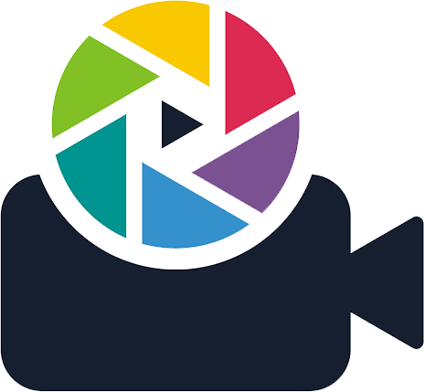

<ion-header [translucent]="true">
  <ion-toolbar>
    <ion-buttons slot="end">
      <ion-menu-button></ion-menu-button>
    </ion-buttons>
    <ion-title>
      <div class="d-flex justify-content-between align-items-center">
        
        {{ title }}
      </div>
    </ion-title>
  </ion-toolbar>
</ion-header>
